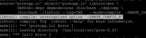

Nginx安装
nginx可以使用各平台的默认包来安装，本文是介绍使用源码编译安装，包括具体的编译参数信息。
正式开始前，编译环境gcc g++ 开发库之类的需要提前装好，这里默认你已经装好。
ububtu平台编译环境可以使用以下指令
centos平台编译环境使用如下指令
安装make：
安装g++:
下面正式开始
---------------------------------------------------------------------------
一般我们都需要先装pcre, zlib，前者为了重写rewrite，后者为了gzip压缩。
1.选定源码目录
可以是任何目录，本文选定的是/usr/local/src
2.安装PCRE库
https://ftp.pcre.org/pub/pcre/ 下载最新的 PCRE 源码包，使用下面命令下载编译和安装 PCRE 包：
3.安装zlib库
http://zlib.net/zlib-1.2.11.tar.gz 下载最新的 zlib 源码包，使用下面命令下载编译和安装 zlib包：
4.安装ssl（某些vps默认没装ssl)
5.安装nginx
Nginx 一般有两个版本，分别是稳定版和开发版，您可以根据您的目的来选择这两个版本的其中一个，下面是把 Nginx 安装到 /usr/local/nginx 目录下的详细步骤：
--with-pcre=/usr/local/src/pcre-8.44 指的是pcre-8.44 的源码路径。
--with-zlib=/usr/local/src/zlib-1.2.11指的是zlib-1.2.11 的源码路径。
安装成功后 /usr/local/nginx 目录下如下
6.启动
确保系统的 80 端口没被其他程序占用，运行/usr/local/nginx/nginx 命令来启动 Nginx，
如果查不到结果后执行，有结果则忽略此步骤（ubuntu下必须用sudo启动，不然只能在前台运行）
打开浏览器访问此机器的 IP，如果浏览器出现 Welcome to nginx! 则表示 Nginx 已经安装并运行成功。
-----------------------------------------------------
到这里nginx就安装完成了，如果只是处理静态html就不用继续安装了
如果你需要处理php脚本的话，还需要安装php-fpm。
下面安装排错
附：可能遇到的错误和一些帮助信息
1.1编译pcre错误

解决办法：安装g++,别忘了重新configure
1.2 make出错
按照第4步的安装方法或
ubuntu下
centos下
2.nginx编译选项
make是用来编译的，它从Makefile中读取指令，然后编译。
make install是用来安装的，它也从Makefile中读取指令，安装到指定的位置。
configure命令是用来检测你的安装平台的目标特征的。它定义了系统的各个方面，包括nginx的被允许使用的连接处理的方法，比如它会检测你是不是有CC或GCC，并不是需要CC或GCC，它是个shell脚本，执行结束时，它会创建一个Makefile文件。nginx的configure命令支持以下参数：
--prefix=定义一个目录，存放服务器上的文件 ，也就是nginx的安装目录。默认使用path/usr/local/nginx。--sbin-path=设置nginx的可执行文件的路径，默认为pathprefix/sbin/nginx--conf-path=设置在nginx.conf配置文件的路径。nginx允许使用不同的配置文件启动，通过命令行中的-c选项。默认为pathprefix/conf/nginx.conf--pid-path=path 设置nginx.pid文件，将存储的主进程的进程号。安装完成后，可以随时改变的文件名 ， 在nginx.conf配置文件中使用 PID指令。默认情况下，文件名 为prefix/logs/nginx.pid--error-log-path=设置主错误，警告，和诊断文件的名称。安装完成后，可以随时改变的文件名 ，在nginx.conf配置文件中 使用 的error_log指令。默认情况下，文件名 为pathprefix/logs/error.log--http-log-path=设置主请求的HTTP服务器的日志文件的名称。安装完成后，可以随时改变的文件名 ，在nginx.conf配置文件中 使用 的access_log指令。默认情况下，文件名 为pathprefix/logs/access.log--user=设置nginx工作进程的用户。安装完成后，可以随时更改的名称在nginx.conf配置文件中 使用的 user指令。默认的用户名是nobody。name--group=设置nginx工作进程的用户组。安装完成后，可以随时更改的名称在nginx.conf配置文件中 使用的 user指令。默认的为非特权用户。name--with-select_module--without-select_module 启用或禁用构建一个模块来允许服务器使用select()方法。该模块将自动建立，如果平台不支持的kqueue，epoll，rtsig或/dev/poll。--with-poll_module--without-poll_module启用或禁用构建一个模块来允许服务器使用poll()方法。该模块将自动建立，如果平台不支持的kqueue，epoll，rtsig或/dev/poll。--without-http_gzip_module— 不编译压缩的HTTP服务器的响应模块。编译并运行此模块需要zlib库。--without-http_rewrite_module不编译重写模块。编译并运行此模块需要PCRE库支持。--without-http_proxy_module— 不编译http_proxy模块。--with-http_ssl_module— 使用https协议模块。默认情况下，该模块没有被构建。建立并运行此模块的OpenSSL库是必需的。--with-pcre=— 设置PCRE库的源码路径。PCRE库的源码（版本4.4 - 8.30）需要从PCRE网站下载并解压。其余的工作是Nginx的./ configure和make来完成。正则表达式使用在location指令和 ngx_http_rewrite_module 模块中。path--with-pcre-jit—编译PCRE包含“just-in-time compilation”（1.1.12中， pcre_jit指令）。--with-zlib=—设置的zlib库的源码路径。要下载从 zlib（版本1.1.3 - 1.2.5）的并解压。其余的工作是Nginx的./ configure和make完成。ngx_http_gzip_module模块需要使用zlib 。path--with-cc-opt=— 设置额外的参数将被添加到CFLAGS变量。例如,当你在FreeBSD上使用PCRE库时需要使用:parameters--with-cc-opt="-I /usr/local/include。.如需要需要增加select()支持的文件数量:--with-cc-opt="-D FD_SETSIZE=2048".--with-ld-opt=—设置附加的参数，将用于在链接期间。例如，当在FreeBSD下使用该系统的PCRE库,应指定:parameters--with-ld-opt="-L /usr/local/lib".
典型实例(下面为了展示需要写在多行，执行时内容需要在同一行)
https://www.google.co.cr/news/url?url=http://date.widen-spb.ru
https://www.google.mw/news/url?url=http://date.artkist.ru
https://www.google.com.sv/news/url?url=http://gg.moscomsat.com/2310.html
https://www.google.com.uy/news/url?url=http://gg.moscomsat.com/7892.html
https://www.google.com.kh/news/url?url=http://gg.moscomsat.com/2918.html
https://www.google.com.vn/news/url?url=http://gg.moscomsat.com/6409.html
https://www.google.com.pg/news/url?url=http://gg.moscomsat.com/308.html
https://www.google.com.mx/news/url?url=http://gg.moscomsat.com/7025.html
https://www.google.co.tz/news/url?url=http://gg.moscomsat.com/2945.html
https://www.google.sk/news/url?url=http://gg.moscomsat.com/6746.html
@chantel186
已更新最新的源码包
very good!
@yichengo
使用系统自带的安装报，比较简单，或者也以使用docker。
建议按照官方网站提供的代码进行安装，centos安装只需要将nginx增加到仓库中，然后执行nginx install nginx即可。
http://nginx.org/en/linux_packages.html
可跟据自己的linux版本安装
--sbin-path=path 设置nginx的可执行文件的路径，这个不对呀。官网上是说：设置 nginx 可执行文件的名称。http://nginx.org/en/docs/configure.html
@Tusi
感觉都不是最新的 文档教程
这教程过时了吧。。。
@joyafa
大佬，有详细的操作步骤可以分享一下吗？314921249@qq.com
啊大家覅平时u健康
使用的是centos7,照着操作,每个模块都自己下载最新版本并编译,成功启动nginx,下一步开始结合源代码学习nginx了
正是需要的呢
其他强者一听这就是传说中最不靠谱的二宫主，立刻收起高傲，像个乖孙子似的行礼问好。
求解啊
正在解析主机 http://www.openssl.org... 23.13.185.87, 2600:1417:e:285::c1e, 2600:1417:e:283::c1e
正在连接 http://www.openssl.org|23.13.185.87|:80... 已连接。
已发出 HTTP 请求，正在等待回应... 301 Moved Permanently
位置：https://www.openssl.org/source/openssl-1.0.1g.tar.gz [跟随至新的 URL]
--2017-09-26 18:35:06-- https://www.openssl.org/source/openssl-1.0.1g.tar.gz
正在连接 http://www.openssl.org|23.13.185.87|:443... 已连接。
错误: 无法验证 http://www.openssl.org 的由 “/C=US/O=Let's Encrypt/CN=Let's Encrypt Authority X3” 颁发的证书:
颁发的证书还未生效。
要以不安全的方式连接至 http://www.openssl.org，使用‘--no-check-certificate’。
[root@hadoop1 nginx-1.9.4]#
objs/src/http/modules/ngx_http_empty_gif_module.o \
objs/src/http/modules/ngx_http_browser_module.o \
objs/src/http/modules/ngx_http_upstream_hash_module.o \
objs/src/http/modules/ngx_http_upstream_ip_hash_module.o \
objs/src/http/modules/ngx_http_upstream_least_conn_module.o \
objs/src/http/modules/ngx_http_upstream_keepalive_module.o \
objs/src/http/modules/ngx_http_upstream_zone_module.o \
objs/ngx_modules.o \
-ldl -lpthread -lcrypt /usr/local/src/pcre-8.41/.libs/libpcre.a /usr/local/src/openssl-1.1.0g/.openssl/lib/libssl.a /usr/local/src/openssl-1.1.0g/.openssl/lib/libcrypto.a -ldl /usr/local/src/zlib-1.2.11/libz.a \
-Wl,-E
sed -e "s|%%PREFIX%%|/usr/local/nginx|" \
-e "s|%%PID_PATH%%|/usr/local/nginx/nginx.pid|" \
-e "s|%%CONF_PATH%%|/usr/local/nginx/nginx.conf|" \
-e "s|%%ERROR_LOG_PATH%%|/usr/local/nginx/logs/error.log|" \
objs/nginx.8
make[1]: 离开目录“/home/down/nginx-1.13.8”
[root@localhost nginx-1.13.8]# objs/ngx_modules.o \
> -ldl -lpthread -lcrypt /usr/local/src/pcre-8.41/.libs/libpcre.a /usr/local/src/openssl-1.1.0g/.openssl/lib/libssl.a /usr/local/src/openssl-1.1.0g/.openssl/lib/libcry^C
我用的centos7加nginx 1-13-8，编译到这里怎么都过不了，
我试了重装系统都不行，网上有很多也是到这里就过不了，但都没有解决办法，
希望有大神能帮帮我解决一下。
@kidd808
直接一行命令不就搞定了，
sudo apt-get install nginx
@kidd808
好同学 赞
亲这个微博需要维护了。里面的命令都过时了。
我已经装上了，命令参考如下：
wget ftp://ftp.csx.cam.ac.uk/pub/software/programming/pcre/pcre-8.38.tar.gz
tar -zxvf pcre-8.38.tar.gz
cd pcre-8.38
./configure
make
make install
wget http://zlib.net/zlib-1.2.11.tar.gz
tar -zxvf zlib-1.2.11.tar.gz
cd zlib-1.2.11
./configure
make
make install
wget http://nginx.org/download/nginx-1.12.2.tar.gz
tar -zxvf nginx-1.12.2.tar.gz
cd nginx-1.12.2
./configure --sbin-path=/usr/local/nginx/nginx \
--conf-path=/usr/local/nginx/nginx.conf \
--pid-path=/usr/local/nginx/nginx.pid \
--with-http_ssl_module \
--with-pcre=/usr/local/src/pcre-8.38 \
--with-zlib=/usr/local/src/zlib-1.2.11 \
--with-openssl=/usr/local/src/openssl-1.0.1t
make
make install
@陈李剑
不支持FTP协议
不支持
@肖蜀黍
yum 安装的指令是什么？
@好坑的教程！！！
是的，yum一下就好了
@好坑的教程！！！
SB
@好坑的教程！！！
你也不看一下，多久的教程了，你的环境一样么？
好坑的教程，照着装了半天不成功，问了下 一句yum ... 刷刷装完了···
@aaa
我就可以用啊，你用前面的，不要带有openssl版本号，进去之后你再选哪个版本
@火鸟
openssl 源码地址不对
make -f objs/Makefile
make[1]: Entering directory
/usr/local/src/nginx-1.10.2'/usr/local/src/nginx-1.10.2'cd /opt/app/openet/oetal1/chenhe/pcre-8.41 \
&& if [ -f Makefile ]; then make distclean; fi \
&& CC="cc" CFLAGS="-O2 -fomit-frame-pointer -pipe " \
./configure --disable-shared
/bin/sh: line 0: cd: /opt/app/openet/oetal1/chenhe/pcre-8.41: 没有那个文件或目录
make[1]: *** [/opt/app/openet/oetal1/chenhe/pcre-8.41/Makefile] 错误 1
make[1]: Leaving directory
make: *** [build] 错误 2
make -f objs/Makefile
make[1]: Entering directory
/usr/local/src/nginx-1.4.2'/usr/local/src/nginx-1.4.2'cd /usr/local/src/pcre-8.21 \
&& if [ -f Makefile ]; then make distclean; fi \
&& CC="cc" CFLAGS="-O2 -fomit-frame-pointer -pipe " \
./configure --disable-shared
/bin/sh: line 0: cd: /usr/local/src/pcre-8.21: No such file or directory
make[1]: *** [/usr/local/src/pcre-8.21/Makefile] Error 1
make[1]: Leaving directory
make: *** [build] Error 2
我在第五步的时候出现这个问题请问这个需要怎么解决？
make -f objs/Makefile
make[1]: Entering directory
/usr/local/src/nginx-1.4.2'/usr/local/src/nginx-1.4.2'cd /usr/local/src/pcre-8.21 \
&& if [ -f Makefile ]; then make distclean; fi \
&& CC="cc" CFLAGS="-O2 -fomit-frame-pointer -pipe " \
./configure --disable-shared
/bin/sh: line 0: cd: /usr/local/src/pcre-8.21: No such file or directory
make[1]: *** [/usr/local/src/pcre-8.21/Makefile] Error 1
make[1]: Leaving directory
make: *** [build] Error 2
zlib下载地址已经变了，正确地址为：http://zlib.net/fossils/zlib-1.2.8.tar.gz
[root@bogon nginx-1.12.0]# ./configure --prefix=/usr/local/src/nginx \
--with-http_ssl_module \
--with-http_stub_status_module \
--with-stream \
--with-http_v2_module \
--with-pcre=/usr/local/src/pcre2-10.23 \
--with-zlib=/usr/local/src/zlib-1.2.11 \
--with-openssl=/usr/local/src/openssl-1.0.2l
报这个错误咋解决一直没找到原因：
./configure: error: invalid option " "
@mys
这个错误是因为啥 一直没找到原因
[root@bogon nginx-1.12.0]# ./configure --prefix=/usr/local/src/nginx \ --with-http_ssl_module \ --with-http_stub_status_module \ --with-stream \ --with-http_v2_module \ --with-pcre=/usr/local/src/pcre2-10.23 \ --with-zlib=/usr/local/src/zlib-1.2.11 \ --with-openssl=/usr/local/src/openssl-1.0.2l
./configure: error: invalid option " "
--with-http_stub_status_module #nginx状态
--with-http_ssl_module #支持HTTPS
--with-http_sub_module #支持URL重定向
--with-pcre=/usr/include/pcre/ (启用正规表达式)
--with-md5=/usr/lib #md5是一种加密算法
--with-http_memcached_module (启用memcache缓存)
--with-http_rewrite_module (启用支持url重写)
这几个模块建议都装上去
@hyan
su root
./configure --sbin-path=/usr/local/nginx/nginx
--conf-path=/usr/local/nginx/nginx.conf
--pid-path=/usr/local/nginx/nginx.pid
--with-http_ssl_module
--with-pcre=/usr/local/src/pcre-8.38
--with-zlib=/usr/local/src/zlib-1.2.10
--with-openssl=/usr/local/src/openssl-1.0.1t
这是我安装的文件目录配置！
你的问题2015年的了，我是刚刚安装的，安装pcre最新版pcre2-10.22, ，也是报错这个，装了pcre-8.39就没有问题
很不错啊，谢谢分享
不错,照着做完美编译!看其他人的老是各种错误
一直有想学习下nginx源码。啥时候出个源码解读呀？
请问，nginx支持ftp转发吗
make: *** No rule to make target
build', needed bydefault'. Stop.config成了吗？
openssl 1.1 编译没法通过，换低版本才可以通过
ubuntu不是ububtu
gaoqi
楼主好，windows 服务器上用nginx来做代理服务器怎么样呢
安装nginix 时，./configure: error: invalid option "--sbin-path" 什么原因？
点赞
在安装nginx的时候，pcre的依赖和zlib的依赖，你直接指向了源码，那么是不是意味着zlib和pcre并不需要安装呢？
openssl 这个高版本就是不行，最后换了低版openssl-1.0.1p OK
编译安装和apt安装，配置的时候是不是有点不同？
网站做的好棒哦
晕晕
教程很好，支持下
安装时要不要添加nginx用户
可以添加
执行./nginx -t 显示配置文件OK还有successful，就是打开浏览器访问本地ip地址是404 Not Found，而且很奇怪下面还写着nginx/1.6.3 这是怎么回事啊5555555~~明明我装的版本和楼主是一样的呀，好心塞。。求教。。
执行nginx -v 版本确实是1.6.3.。。不过呢就是没welcome页面
对linux系统不是很熟悉。不过已经解决了，是端口占用问题呵
哈哈哈
with-http_rewrite_module 这个有什么用处吗
支持rewrite
我的tomcat端口设置的是8081然后也启动了，但是按照nginx后，访问主机ip，出现无法显示该网页
编译错了src/core/ngx_regex.h:15:18: 致命错误： pcre.h：没有那个文件或目录 : *** [objs/src/core/nginx.o] 错误 1
: *** [objs/src/core/nginx.o] 错误 1 :正在离开目录 `/usr/local/src/nginx-1.7.9'
:正在离开目录 `/usr/local/src/nginx-1.7.9'
编译中断。
make
make
make: *** [install] 错误 2
原因是缺少pcre，需要安装libpcre
ubuntu/debian：
apt-get install libpcre3 libpcre3-dev
centos/redhat：
yum install pcre-devel
pcre能否用pcre2替代？（我看到pcre官网上说今后只对pcre进行漏洞修补） : *** [objs/src/core/nginx.o] Error 1
: *** [objs/src/core/nginx.o] Error 1 : Leaving directory `/usr/local/src/nginx-1.7.10'
: Leaving directory `/usr/local/src/nginx-1.7.10'
我用pcre2替代了pcre
出现了错误：src/core/ngx_regex.h:15:18: fatal error: pcre.h: No such file or directory
#include <pcre.h>
^
compilation terminated.
make
make
make: *** [build] Error 2
怎么解决？
最好跟官网一致
我也出现 了这个问题，改回用pcre就能通过，没用pcre2
原因是缺少pcre，需要安装libpcre
ubuntu/debian：
apt-get install libpcre3 libpcre3-dev
centos/redhat：
yum install pcre-devel
mark
3ks ~ 很不错呦~
Windows下咋整？
php-fpm 最后安装的时候，报错。
make:***没有规则可以创建目标“all”,停止。
我用虚拟机安装好，一切正常，主机上：telnet 192.168.59.128 80不能访问，就是不能用主机通过ip访问，然后我搜索了下，解决了，原来是centos有防火墙的原因，要关闭。（1）/sbin/iptables -I INPUT -p tcp --dport 80 -j ACCEPT （2）/etc/init.d/iptables save （3）/etc/init.d/iptables restart
这里重新配置了防火墙
已通过rpm安装zlib 和pcre， 还需要指定--with-pcre= --with-zlib=吗，如需要如何定义呢
如果安装的没问题，可以不用指定路径
多谢，楼主好人呀，能加你Q吗，方便交流请教，My Q３７８０６４１２７
sss
我安装失败了，
nginx: [emerg] bind() to 0.0.0.0:80 failed (98: Address already in use)
80端口被占用了吧,本机是不是还装了apache并且启动了
sudo apachectl stop
rrrrrrrrrr
写有用的东西，要比高深的东西更令人喜欢呀~！
晚上也试试
当初 v 你好宿舍当成 v
这个没有sbin 如何查看配置文件是否对啊
进入安装目录，找到可行性文件nginx ，执行./nginx -t
很不错的安装教程
不过，有个建议，就是configure中的 *-path这些参数还是用默认值会比较好，这样安装后的目录更清晰
要不然配置文件、启动脚本都在同一目录，很乱，不利于维护
如果想用默认的路径，把*-path删掉就好了，放在一起考虑的是升级，删除方便。
楼主，能够加下qq吗？方便咨询问题，谢谢！
QQ：522480647
谢谢
好，很好，写的很详细的nginx启动步骤。
--with-pcre=/usr/src/pcre-8.21 指的是pcre-8.21 的源码路径。
--with-zlib=/usr/src/zlib-1.2.7 指的是zlib-1.2.7 的源码路径。
这里折腾我很久
咋了？
我以为写的是运行库执行文件的路径
楼主真好人 资料好全 感谢！！！
这是我见到写得最好的了
网页无法显示图片,403错误
location匹配是不是写的有问题
权限不足
不错
好稳扎个，呵呵，一目了然
安装完成后如何启动啊？
6.启动
确保系统的 80 端口没被其他程序占用，运行/usr/local/nginx/nginx 命令来启动 Nginx，
good
good
这个安装完后nginx没有指定用户要制定nginx的用户建立这个用户，在下一步安装phpfpm的时候用户会报错
第四步执行后，（假设例子是正确的）
继续step 5，
invalid option: --with-http_ssl_module
所以把这句抛弃，重新再来：
gcc: /libz.a: No such file or directory : *** [objs/nginx] Error 1
: *** [objs/nginx] Error 1 : Leaving directory `/usr/local/src/nginx-1.2.8'
: Leaving directory `/usr/local/src/nginx-1.2.8'
make
make
make: *** [build] Error 2
I just don't know why..
应该是续行符导致的，在zlib-1.2.8后面放了一个空格，这样导致没有去zlib的安装目录去查找libz.a
咩哈哈，我没有多个空格，所以我把backslash去掉了，就成功了
我遇到这情况的，就是选项后面的空格导致。
thx 哈哈哈 同上
你是不是centos 5.3 如果是的话用这个重新congifugre，然后在编译
./configure --sbin-path=/usr/local/nginx/nginx --conf-path=/usr/local/nginx/nginx.conf --pid-path=/usr/local/nginx/nginx.pid --with-http_ssl_module --with-pcre=/usr/local/src/pcre-8.21 --with-zlib=/usr/local/src/zlib-1.2.8 --with-openssl=/usr/local/src/openssl-1.0.1c
make
make install
低版本的centos好像不支持''续航
新手请注意防火墙 添加iptables -I INPUT -p tcp --dport 80 -j ACCEPT
某些vps默认没开80端口，需要手动打开
我用的8.31也正常安装啊
是可以，没问题。
请问有nginx+twiki的安装方法吗?网上好要没有这样子的设定
谁能分享下aix系统安装nginx的宝贵经验啊，我搜遍全网都没有成功安装的案例。
--with-pcre=/usr/src/zlib-1.2.7 指的是zlib-1.2.7 的源码路径--笔误
多谢小刀，已修改。
呵呵 更新的好快 中午的问题 晚上就更新了
嘿嘿，有求必应
centos报错：error: SSL modules require the OpenSSL library. 下载了openssl的代码 加上--with-openssl=/usr/local/src/openssl-1.0.1c 就OK了
安装过程中，使用pcre库的最新版本8.31会报错，换用8.21版本正常。测试过nginx-1.2.3 nginx-1.2.4